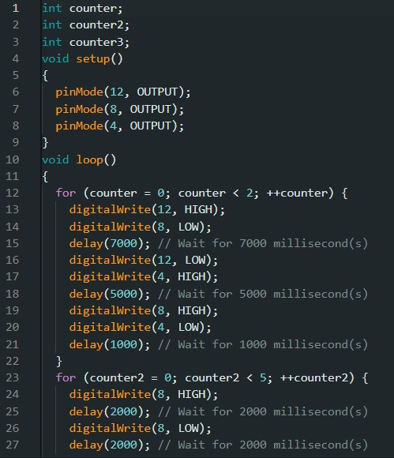

Descrição sobre o o que é a linguagem de programação C++ para ARDUINO
A linguagem de programação C++ para Arduino é uma extensão da linguagem C++ adaptada para o ambiente de desenvolvimento da plataforma Arduino. Arduino é uma plataforma de prototipagem eletrônica que combina hardware e software, permitindo a criação de projetos interativos e dispositivos inteligentes.
Logo abaixo tem um exemplo de código C++ no Arduino IDE

Fonte: Arduino IDE
Logo abaixo um exemplo de código em blocos no Tinkercad